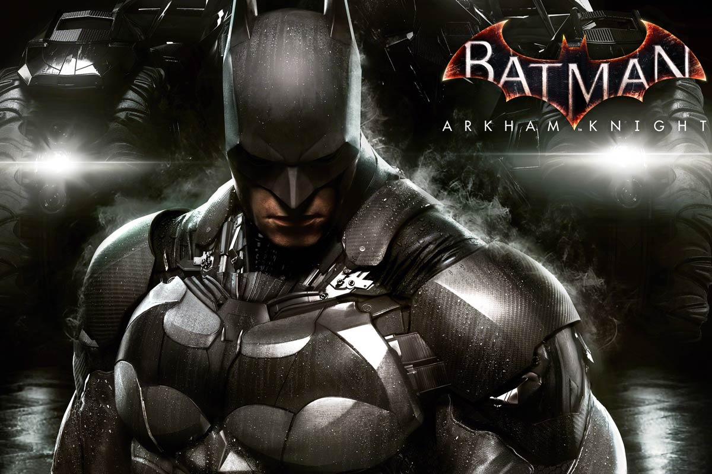
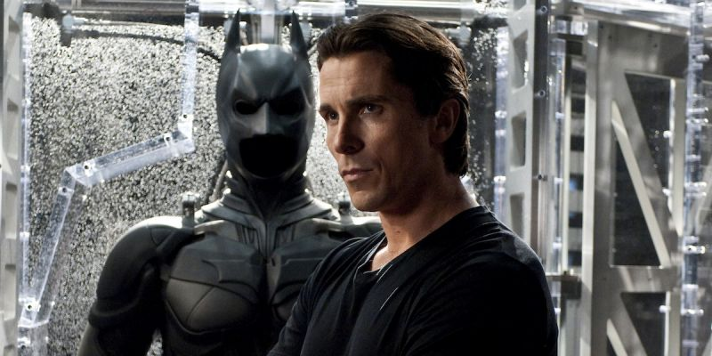
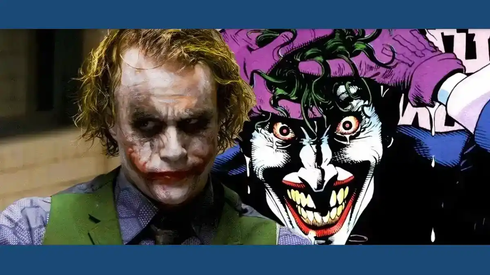
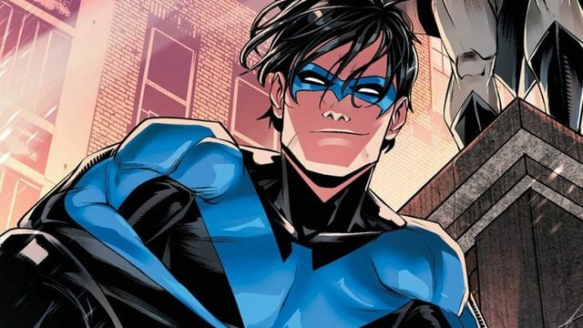

Postado em: 20/08/2024
Qual a real História do Batman e como ele se tornou o que é, incluindo sua trajetória no jogo Arkham Knight.
hifhmo: Então o Batman nem sempre foi revoltado?
Postado em: 20/08/2024
Qual é o Batman mais prestigiado?
knght.me: Para mim não há batman melhor que Christian Bale.
Postado em: 20/08/2024
Qual o legado que Heath Ledger deixou como Coringa?
urgepms: Sempre será lembrado!
Postado em: 20/08/2024
Conheça a genialidade dos sucessores de Bruce Wayne.
nghtwings: Batman tem uma Liga de Heróis em casa.
Conecte-se comigo nas redes sociais: X(Antigo Twitter)
Contato: liviaana586@gmail.com